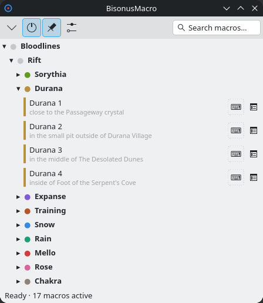
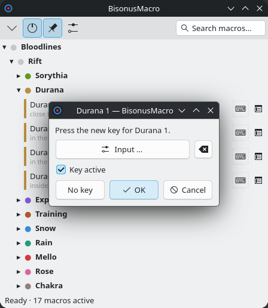

The panel shows your macros in categories. It shows above the game and does not take the focus.

KDE draws the frame of the panel, like the frame of any other window. It has the icon of the program and the title "BisonusMacro". Drag the frame to move the panel. KDE remembers the place.
The frame has three buttons on the right:
The toolbar is under the frame. On the left are four buttons:
The field "Search macros..." is on the right. See "Search" below. While a macro runs, the button "■ Stop" and the name of the macro take the place of the field. Click it to stop the macro.
The key F12 folds and unfolds the panel. You can change it in the main window, at "Key that shows and hides the panel".
Drag an edge or a corner of the frame. KDE changes the size and the program remembers it. The default width is 448 px. The list scrolls when it does not fit. A long description ends with "...", and the tooltip of the row shows it in full.
Each category has a colored dot. Click the title to fold the category or unfold it. The program remembers the state of each category.
A row has a colored band, the name, the description and the key button. The code button is at the right of the row. It shows the steps of the macro in a read-only window. It works on a gray macro too. For a macro that presses 6, it shows key 6, wait 2000, key /, text Snow 2 and key Return. A macro with an error shows the reason in place of the description.
A warning sign near two macros means that they have the same key. The panel shows the name of the other macro.
The key button is next to the row. A click on it does not prepare the macro. A macro with no key has the button ⌨ with a dotted border. A gray key button means that the key is off. The button works on a gray row too.

The window asks the same questions as the page "Macros" of the main window, for example when another macro has the key. A category has no key button in the panel. Change the key of a category in the main window.
If the main window has changes you did not save, it loads the file again after a key change. It drops these changes and says so.
The panel does not take the focus, so Ctrl+F does not work in it. Click the field "Search macros..." in the toolbar.
Without the pin, the panel is an ordinary window. A click on it brings it above the other windows. The click does not give it the keyboard. A click on another window puts that window above the panel. The panel does not disappear.
The windows in the list "Panel on top of", on the page "Panel", cannot cover the panel. This is true in full screen too. Default: Sober.
With the pin, no window covers the panel. The tooltip of the button says "Pinned" or "Not pinned". The program remembers your choice. You can set a key for the pin in the main window, at "Key for 📌".
The bottom line of the panel shows only the state: "Ready · 5 macros active" or "Running: Snow 2". The number counts the macros that can start now. The line does not show a key.
The background of the panel is translucent. The text, the bands and the keys stay opaque. Set the opacity in the main window, at "Panel background opacity". Default: 60%. The box "Transparent background" and its key switch between the chosen opacity and an opaque background.
The icon in the tray has color when macros are on. It is gray when macros are off. A left click shows a hidden panel and brings it above the other windows. It does the same for a panel that other windows cover. A left click never hides the panel: use the minus button for that. The game keeps the keyboard. The menu has "Macros active", "Open BisonusMacro", "Help" and "Quit". The tooltip shows the global keys as a tree. Each key has its state, for example Snow 2 - F2 - off, Rift is off.
"Quit" in the tray and the cross of the frame are the only places that stop the program.
The panel stays above all windows. The status line says "KWin script failed: panel stays on top".